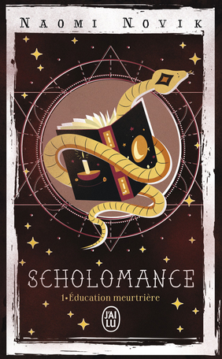
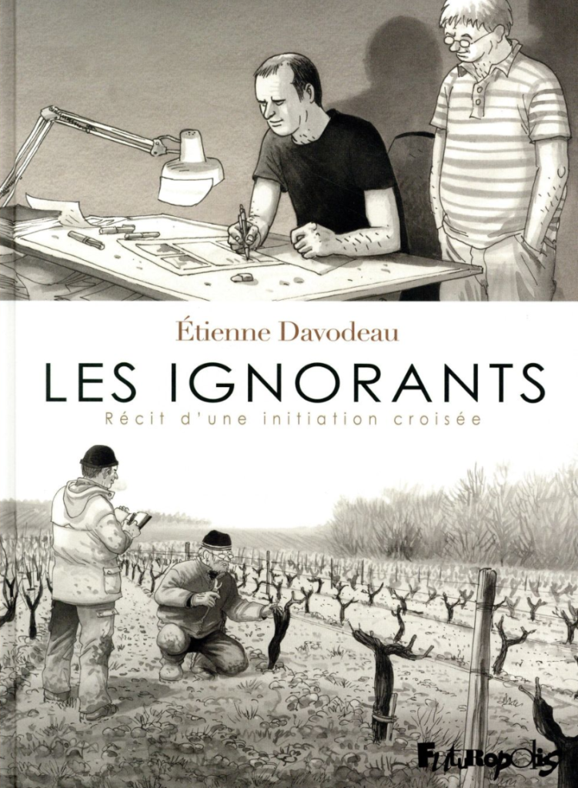

Ce mois-ci, le thème du club de lecture est à nouveau raccord avec le moment de l’année. C’est la rentrée des classes, alors on s’est intéressé à ce que c’est “apprendre”. Pour l’occasion, j’ai sélectionné dans ma bibliothèque deux romans et une BD.

Un peu de fantasy pour commencer avec le premier tome de la trilogie Scholomance de Naomi Novik, Éducation meurtrière. L’apprentissage, ici, se fait au travers d’une école de magie isolée du monde et dépourvue de professeurs. C’est l’école elle-même qui se charge d’enseigner les matières aux élèves dont elle a la charge, selon ses propres règles obscures. Elle est aussi peuplée d’une multitude de monstres qui n’ont de cesse d’essayer de dévorer les étudiant·es, ce qui crée un contexte peu propice à la sérénité. Le terme “scholomance” provient par ailleurs du folklore roumain et désigne une école de magie noire dirigée par le Diable, en Transylvanie (où d’autre ?).
Avec Moi, Jean Gabin, Goliarda Sapienza nous parle de son enfance. Et le moins qu’on puisse dire, c’est qu’elle ne l’a pas passée sur les bancs de l’école, même si elle évoque par moment un de ses professeurs. Il est plutôt ici question d’un apprentissage de la vie par la rue, le quartier, le cinéma, la famille. Le tout se déroule en Sicile dans un contexte de violence fasciste : nous sommes dans les années 1930 et Mussolini est au pouvoir. Loin d’être une vague toile de fond, cette violence fait partie du quotidien de Goliarda, qui doit apprendre à vivre avec et à s’y opposer. Sa passion pour Jean Gabin, dont elle dit dès la première page qu’il lui a appris à aimer les femmes, lui sert de phare dans la nuit.

Durant le club de lecture, les amateurs et amatrices de vin ont l’occasion de déguster une bonne bouteille choisie avec soin par l’organisatrice de l’événement. Ainsi, ça m’a semblé être le moment idéal d’y ramener Les Ignorants, BD d’Étienne Davodeau sortie en 2011. L’auteur y raconte comment il a appris à connaître le métier de vigneron exercé par son ami Richard Leroy (farouche opposant aux pesticides), à qui il a réciproquement fait découvrir le monde de la bande dessinée. Il faut malheureusement accepter le discours fumeux autour de la biodynamie, mais le personnage d’Étienne Davodeau lui-même - plutôt amusé - ne cache pas ses doutes pendant son apprentissage de la méthode. Sur le sujet, je voudrais d’ailleurs lire la trilogie CosmoBacchus de Jean-Benoît Meybeck, une enquête en BD sur la biodynamie et l’anthroposophie. Au final, cette particularité n’empêche pas d’apprécier le dessin et le double récit d’apprentissage proposé par l’auteur.